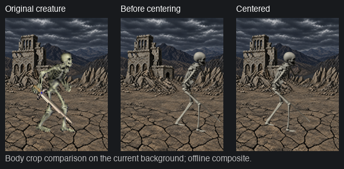
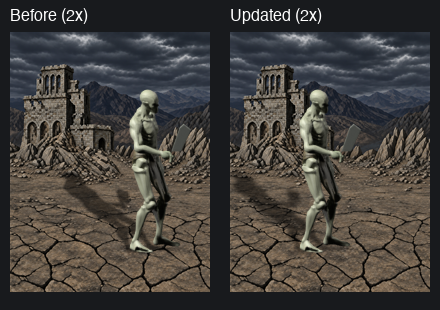

Mod 0.7.0. Offline composites, not game screenshots. Both creatures use the accepted background. Walking dead shifts left 25 logical pixels; skeleton registration stays intact.


Both sides use identical body frames and canvas crops. Left: previous shadow. Right: fixed ground and continuous alpha. Holding is shown at 4 fps, movement at 8 fps, front attack at 7 fps; these are review playback rates, not in-game timing measurements. No temporal averaging.